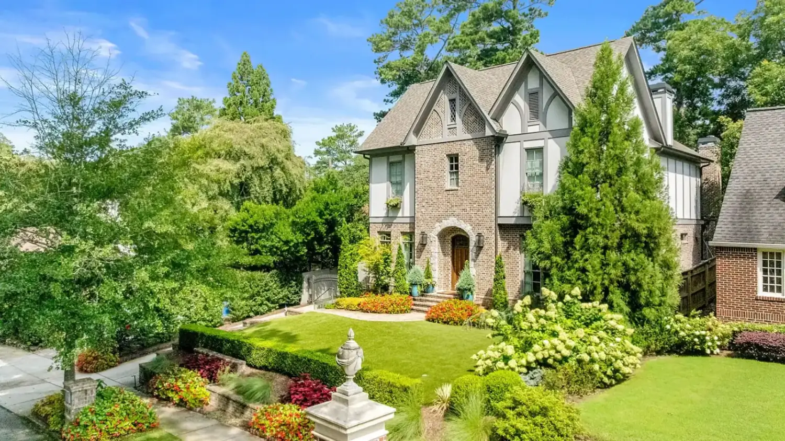

Lulu WangGoogle · 5★
“The Yogardener team is fantastic. They’re hardworking, efficient, and incredibly detail oriented. We were so lucky to work with them on our landscape project!”
Landscape planning, design and installation for Atlanta. Everarde Calk, principal, has spent a decade reading Piedmont clay, slope and summer heat before putting a single plant in the ground.

Swipe, or use the arrow keys, to pan the plan →
March — Wait for green-up The best month to lime, but no nitrogen on warm-season turf until soil at 4″ holds 65°F and rising. UGA Fulton Extension
Red clay packs down and drains badly. Slopes move water fast. July arrives hot and wet at once, and there is no real dry season to hide in. This is why a plan comes before a plant — and why the plan starts with the ground.
About 40% of the samples tested at UGA’s Soil, Plant and Water Laboratory need lime — and lime takes months to react. Testing in January is what lets March act on it.
UGA Soil Test Handbook for GeorgiaAtlanta averages 50.4 inches with no true dry season. July is simultaneously the hottest (90.1°F) and the wettest (4.75″) month — which is why turf disease here is humidity-driven, not drought-driven.
NOAA 1991–2020 Normals, Atlanta Hartsfield-JacksonEarliest on record was October 11, 1906; latest December 18, 1998. Irrigation is winterized before it, not after.
NWS Atlanta / Peachtree CityCore aeration at minimum every three to four years, and once or twice a year where the soil is compacted. In a Piedmont yard, this is not an optional extra — it is what lets water leave.
UGA Integrated Pest Management, 2020Three tracks, drawn from the twelve services Yogardener actually carries. Most projects draw on more than one.
Selected work from the Yogardener portfolio. Each one started the same way: with the existing conditions, read before anything was decided.


Quoted in full, exactly as written, from Google and Nextdoor. Most of these homeowners name Everarde themselves.
“Work was done perfectly and very quickly for a fair price.”
“The quality of the project is superb and the service has been outstanding.”
Google’s own highlighted lines from the reviews“The Yogardener team is fantastic. They’re hardworking, efficient, and incredibly detail oriented. We were so lucky to work with them on our landscape project!”
“Everarde and his crew did a great job with our front and backyard’s plantings. From the initial call, through the first meeting, all the way until the project’s completion — everything progressed as we were told it would.”
“I’ve been unable to grow grass in my front yard for well over a decade — but with Everarde’s expertise, his team created a beautiful & creative forest-scape that looks amazing!”
“They were able to fit us in quickly and get everything looking great in time for the party. Everarde and the entire Yogardener team couldn’t have been nicer, more professional, or easier to work with.”
“Everarde showed up on time and during our walk thru I found him very friendly as well as knowledgeable about desirable plants -vs- weeds. I’ve had yard services that basically whacked down or sprayed valuable plants.”
“We’ve used Everarde’s Yogardener team for the past 6 years and have been incredibly happy with the results. They keep our yard looking fresh throughout each season.”
“Everarde and crew were fantastic! Very honest and quick to communicate. He was very meticulous when it came to meeting permit requirements for the city and making sure his work would look amazing.”
“The quote I agreed upon, was completed exactly as quoted. I appreciate the good, honest work.”
“Meticulous planning, yogardner is a plant selection wizard! Careful installation a real plus.”
“Absolutely incredible company! Everarde and his team do top-notch work. He can turn your lawn into the lawn of your dreams, he truly has a gift!”
“Nice work. And good-looking dog. I’m so ready to enjoy being outside without getting covered in pine pollen.”
“Work was done perfectly and very quickly for a fair price. Highly recommend. Will be using them again for sure.”
Yogardener is one principal, a small crew, and ten years of Atlanta land. The work is technical; the reason for it is not.
Principal · Yogardener, LLC
“Everarde Calk is an entrepreneur, yogi, philosopher and firm believer that all hands and minds are needed to solve the social and environmental challenges of the 21st century.”
He trained in Permaculture Design with Stephen Brooks and Sarah Wu at the Global Eclipse Gathering in 2017, then brought the method home: “In permaculture design, we refer to this sphere of influence as ‘Zone 0’ — the home.”
He is now on the advisory board of Concrete Jungle, the largest food rescue programme in the Southeast.
Yogardener has funded and planted a food forest at the cOMingle Festival, directed the stage design for Earthbeat Southeast, donated a mandala garden and managed construction of the roof over its stage at Atlanta Action Day, and worked with Friends of English Avenue on an eight-week summer jobs programme in 2016, teaching landscaping, horticulture and yoga to young people aged 16–24.
 Atlanta Action Day #2, 2018
Atlanta Action Day #2, 2018 cOMingle food forest
cOMingle food forest Earthbeat Southeast stage design
Earthbeat Southeast stage design Mena’s Farm, Proctor Creek
Mena’s Farm, Proctor CreekWhat Atlanta land is doing, month by month, and when the work belongs in the ground. This is the calendar we plan by — and it is the calendar we hand you.
Four in ten soil samples tested in Georgia need lime, and lime takes months to react. Winter is when the test goes in so March can act on it.
UGA Soil HandbookBuds swell mid-February in south Georgia — and by mid-March in north Georgia, which includes Atlanta. February is the ideal month to lay new sod. Renewal-pruning overgrown shrubs now gives new growth a full season to establish.
UGA B-961 · UGA Fulton ExtensionThe best month to lime. But no nitrogen on warm-season turf until soil at 4″ holds 65°F and rising — too early invites large patch.
UGA Fulton ExtensionApril is a best month for core aeration, and tall fescue is the Piedmont’s grass. Aerate before overseeding, so the seed reaches soil.
UGA Turf CalendarCore aeration for bermuda, zoysia and centipede. Warm-season sod goes in from late April. Centipede takes 5 lb of 12-4-8 per 1,000 sq ft.
UGA Turf Calendars · UGA Centipede GuideAbout an inch a week, twice a week. In a city taking 50 inches of rain, more water is the problem, not less.
UGA IPM, 2020July is the hottest and wettest month here. Dollar spot and brown patch peak at 75–85°F; fescue opens its canopy until late September. It is not dying.
UGA IPM, 2020Mowing height goes up half an inch in heat. Azaleas are not pruned after mid-July, or next spring’s flowers go with it.
UGA Turf Calendar · UGA B-961September and October are ideal for establishing tall fescue — seed germinates in 5–10 days, so thin canopy can be interseeded while it is still warm.
UGA Fulton ExtensionCore aeration, fall fertilisation, winter preemergence and irrigation winterization — all before Atlanta’s average first freeze on November 13.
UGA Turfgrass Calendars · UGA B-1439 · NWSDrain the lines, backflush the filters, remove every part that can hold water. The average first freeze is November 13; the earliest was October 11, 1906.
UGA B-1439 · NWSMulch 2–3″ deep over root zones and no farther than the drip line, kept 3–4″ off the trunk. Leave dry leaves to mow and melt.
UGA CAESCalendar drawn from UGA Cooperative Extension’s published lawn calendars and the Georgia Turfgrass Handbook, with NOAA 1991–2020 normals for Atlanta Hartsfield-Jackson and NWS Atlanta freeze dates. Individually quoted in each month. Yogardener’s own writing on the same subjects is at yogardener.com/blog.
Bring the property, the problem, or just the yard you keep looking at. We will tell you what it needs and what it does not.
Three fields and a sentence about your yard — the whole brief, in your own words.